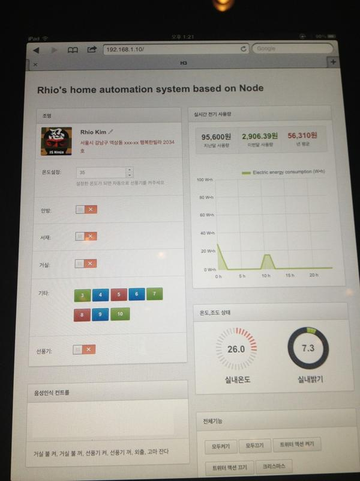

nezz
blog: http://nezz.pe.kr
twitter: @imtaehyun
github: imtaehyun
잠시나마 스티브잡스와 같은길을 걸어본 사람
어제 KTH에서 매년 진행하는 H3 컨퍼런스를 다녀왔다. 작년에는 사전등록 시간을 잘못 알아서 신청하지 못했었는데, 이번엔 사전등록을 모바일 앱으로만 할 수 있었는데다가 시간이 되니까 알아서 푸쉬노티를 보내줘서 사전등록에 성공했다. 컨퍼런스를 시작하면서 @xguru님이 말씀하시길 7분만에 사전등록이 완료되었다고 하니 난 운이 좋았던것 같다.
H3 2012 행사 스케치 영상
주제는 꽤 다양했는데 나는 최근 Node.js에 관심이 생기기 시작 했고 또한 최근 사용하고 있는 블로그 툴인 하루프레스를 만드신 @rhiokim님이 발표를 하셔서 관련 세션들을 들었다. 들었던 세션들을 정리해보았다.
이 세션에서 전달하고자 한 내용은 Evernote의 공유 및 몇가지 편한기능과 아웃풋으로 PNG파일을 내보내는 Adobe Fireworks를 이용해서 기획자, 디자이너, 개발자 사이의 커뮤니케이션을 잘할 수 있고 그 방법에 대해서 설명했다.
그동안 사람들은 포토샵 파일 또는 파워포인트 슬라이드 문서를 만들어 커뮤니케이션을 해왔는데 Fireworks를 이용하면 페이지 기능과 라이브러리에 여러 페이지에서 공통으로 사용하는 심볼들을 라이브러리로 관리하여 쉽고 효율을 높일 수 있었다. 한개 파일에 150개 이상 관리가 가능하고 용량도 크지 않아 Evernote에 첨부하여 공유하기 적합하다.
에버노트에는 무료계정에서도 psd, ai, 이미지 파일, pdf, audio 등을 모두 첨부할 수 있다. 또한 Fireworks의 png파일을 첨부하면 에버노트에서 바로 열어 수정하고 변경사항이 바로 적용되어 편리하다. 검색기능도 매우 훌륭한데 PDF 문서안의 텍스트도 검색이 되고(옵션에서 PDF를 첨부파일 형태가 아닌 inline형태로 삽입되도록 설정하여야만 가능), 이미지에 포함된 텍스트도 검색이 된다. 그 외에도 특정 텍스트를 암호화 할 수 있는 등 공유하는데 매우 적합하다.
지금까지 그 누구도 Fireworks + Evernote 조합으로 사용하는 것을 본 적이 없었기에 매우 참신한 방법이었다. 그러나 단점을 찾자면, Fireworks는 비싼 라이센스 비용을 부담하고 사용하여야 하므로 자금력이 있는 큰 회사 이외에는 적용하기 힘들것으로 보이고, Evernote는 무료 계정에서 노트를 공유하고 보는것은 가능하지만 수정까지 하려면 적어도 공유한 계정은 프리미엄 계정이어야 한다는 단점이 있다.
하지만 '돈' 문제를 제외한다면 지금까지의 커뮤니케이션 방법을 대체 할 수 있을 것으로 보인다.
내가 들었던 세션 중에서 내가 가장 관심을 가졌었고, 가장 흥미로웠던 세션이었다.
자바스크립트 개발자이신 @rhiokim님의 세션. 세션 제목이 우리가 모르는 Node.js로 할 수 있는 몇가지이기 때문에 node.js를 이용한 여러가지를 경험을 들려주셨다.
첫번째는 locally. 로컬에서 간단하게 로컬 디렉토리를 기반으로 웹서버를 실행할 수 있는 미들웨어. 프론트앤드 개발자는 테스트를 위해 항상 웹서버환경을 구축을 해야했지만 너무 무겁고 번거롭기에 개발하게 되셨다고. locally는 현재 위치를 root해서 localhost를 지정할 수 있다.
두번째로 내가 요즘 블로그 글을 작성하고 있는 Haroopress에 대한 내용이였다. node.js와 여러가지 모듈과 오픈소스를 이용해서 만든 블로깅 툴로 정적 페이지 기반이라서 별도의 서버가 필요없이 github에 블로깅 할 수 있다는 장점이 있다. 또한 계속 새로운 기능이 추가되고 업데이트 되는것이 큰 매력이라고 할 수 있겠다. 또한 Markdown을 이용해서 Geek 한 사람들에게는 큰 매력일 수 있겠다.
마지막은 node.js와 아두이노를 이용한 Home Automation 이였다. 구성은 node, 소켓, 아두이노, 각종 기기들로 구성되어 있었다. @rhiokim님이 아이패드를 멀리 가지고 다니시면서 직접 아두이노를 제어하셨고, 아두이노에 연결된 기기들이 On/Off가 되었다.

그리고 아두이노에 연결된 온도센서와 조도센서가 아두이노에 데이터를 전달하면 그것이 아이패드에 직접 표시가 되는것을 볼 수 있었다. 상당히 신기한 경험이었다. 아두이노 이외에도 Beagle Bone, Raspberry Pi 라는 것이 있고, 이것들에 적용하면 더 만들기 쉽다고 알려주셨다.
상당히 많은것들을 보고 느낄수 있었던 세션이었다.
인터넷의 시작과 동시에 발전되온 프로그래밍 기술 등에 대해서 정리해보고 미래에는 어떻게 변할지에 대해서 고민해 보는 세션이었다. 봄날은 간다라는 세션의 이름은 특정 프로그래밍 언어, 프레임워크들이 유행하고 시들해지는 흐름을 말하는 것이었다.
항상 그래왔다. 언어는 이게 좋다 저게 좋다 싸우고 동기식/비동기식 따지는데, 결론은 여러가지 기술들을 적절히 조합해서 쓰는것이 가장 좋다는 것.
웹브라우저에서 제공하는 3차원 그래픽 자바스크립트 API인 WebGL과 3차원 그래픽 왕초보를 위한 경량 자바스크립트 라이브러리인 Three.js를 소개하는 세션이었다. 그래픽 분야에 별 관심이 없는 나이지만 웹에서도 구현이 된다고 하니 관심이 생겨 듣게 되었다.
하나 하나 소개해주시면서 일일이 예제를 보여주셔서 이해가 정말 잘 되었다. Three.js는 그래픽 표현을 해주는 것은 물론 일반 3D 그래픽 툴로 만든 모델들을 그대로 가져다 쓸 수 있다는것이 너무나도 신기했다. 컴퓨터 성능의 발전과 네트워크 속도의 향상이 그래픽 기술에도 큰 영향을 주는것도 알게되었다.
예전에 Daum 에서 인턴할때 DNA Lab팀에서 API에 대해서 많이 보곤 했어서 궁금해서 들어가본 세션.
최근 OAuth 2.0이 표준으로 확정되었다고 한다. 2.0은 상당히 많은 부분이 변한것 같다. 일단 1.0에서는 Protocol이라고 했었는데, 2.0에서는 Framework으로 변했다. 또 Signature를 필요로했던 복잡한 인증과정을 HTTPS로 바뀌었고, 다양한 인증타입을 지원하게 되었다는 것.
회사에서 요즘 오픈소스를 가지고 프로젝트를 진행하고 있어서 관심을 가지고 들었던 세션.
오픈소스를 분석하는것은 소스를 짠 사람의 생각을 읽는것. 오픈소스를 분석하면서 구조를 파악하고 좋은 코드들을 보면서 공부를 할 수 있다. 그리고 분석하는 것을 넘어 버그를 찾거나, 의견을 내는 것도 좋다. 그리고 궁극적으로 자신이 직접 만든 코드를 오픈소스화 해볼것.
관련링크